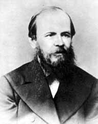

Данный узел посвящен выдающемуся русскому писателю – Федору Михайловичу Достоевскому. Все мы знакомы с его творчеством со школьной скамьи. Однако, не многие из нас могут похвастаться тем, что прочитали и поняли произведения Ф. М. Достоевского выходящие за рамки школьной программы. Знатоков творчества писателя не так уж и много, но одно объединяет всех читателей - и читающих его произведения впервые и всю жизнь изучающих его творчество – Ф. М. Достоевский остается личностью загадочной и не понятной.
Мы узнаем его в образах героев, созданных им на страницах произведений, видим Петербург XIX века глазами писателя, начинаем ощущать и понимать атмосферу того времени. Но вместе с тем, как бы много мы ни понимали в прочитанном, всегда остается что-то недосказанное, загадочное, противоречивое. Здесь уже открывается простор для фантазии, для полета наших мыслей и чувств…
Задача данного узла познакомить Вас с жизнью и творчеством Ф. М. Достоевского, помочь лучше понять глубокий духовный мир этого великого человека…